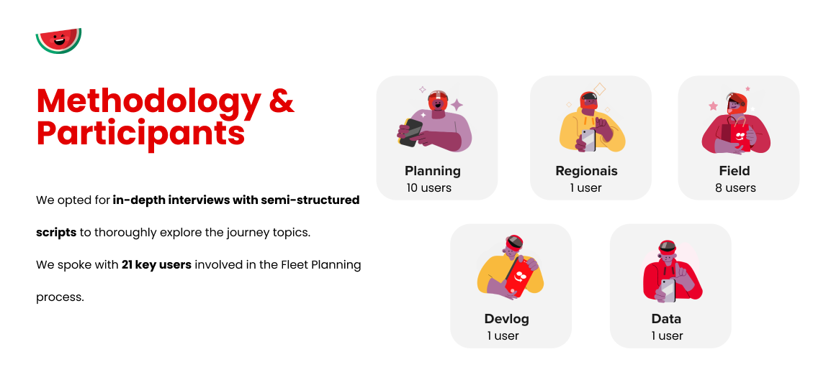
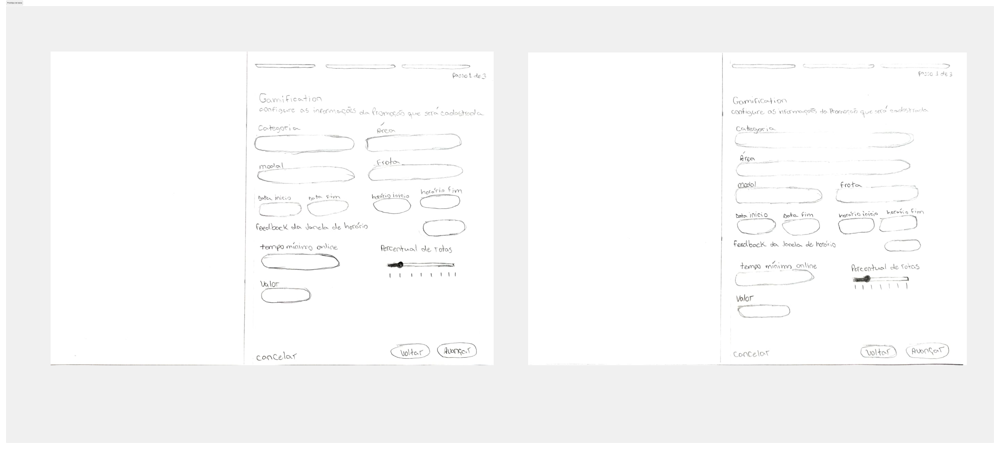
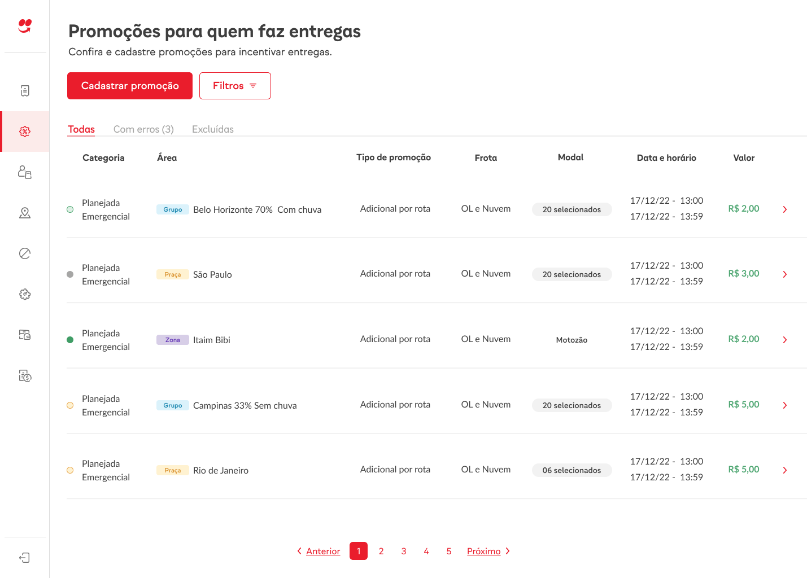
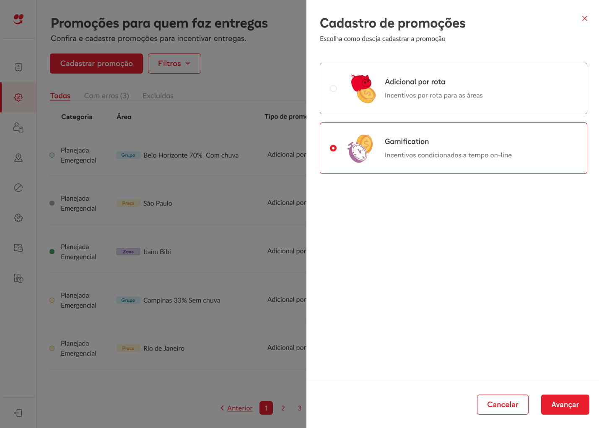
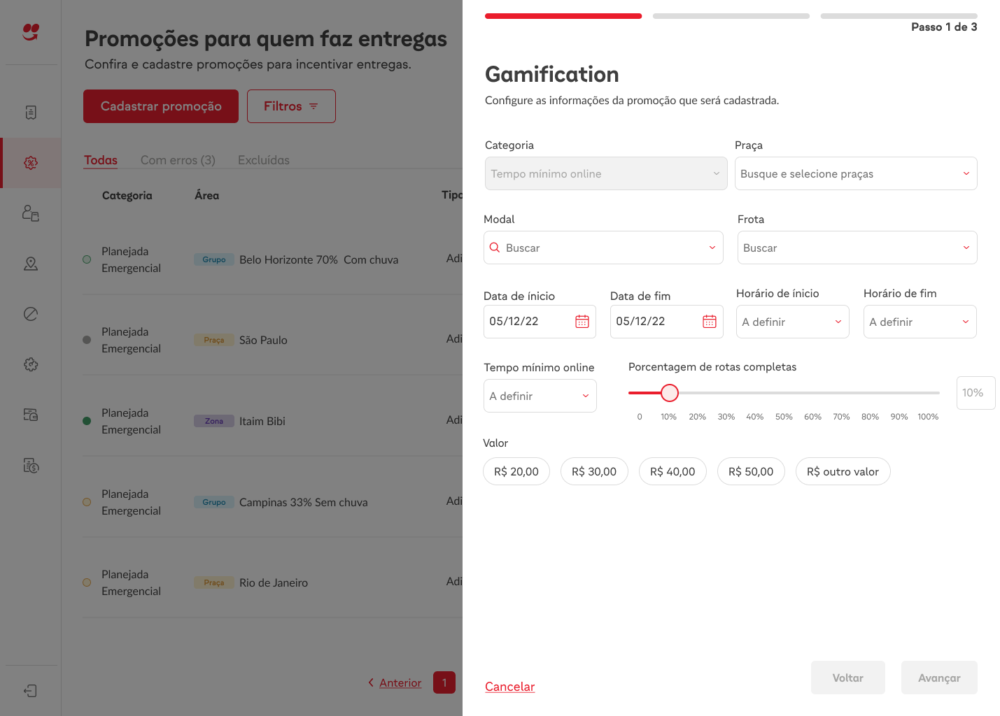
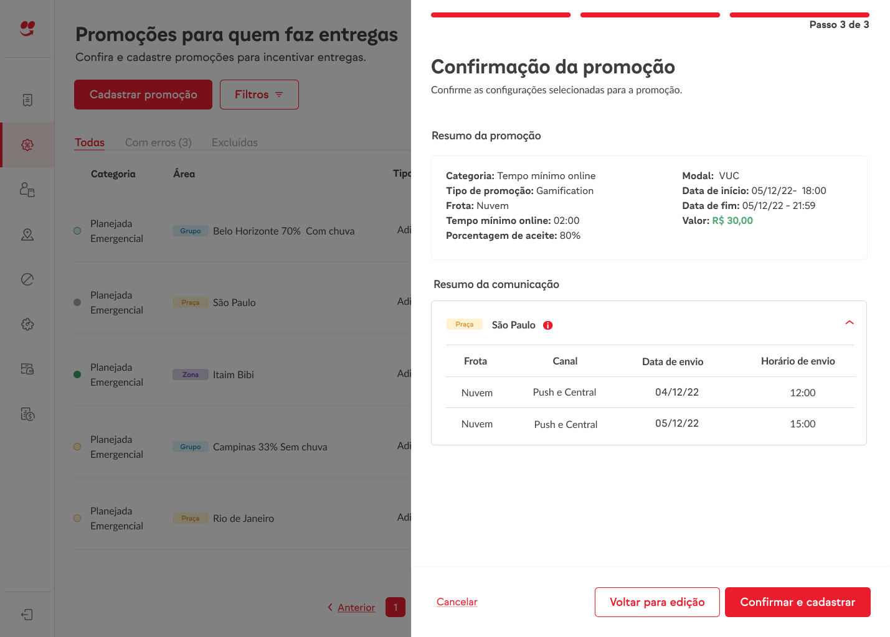
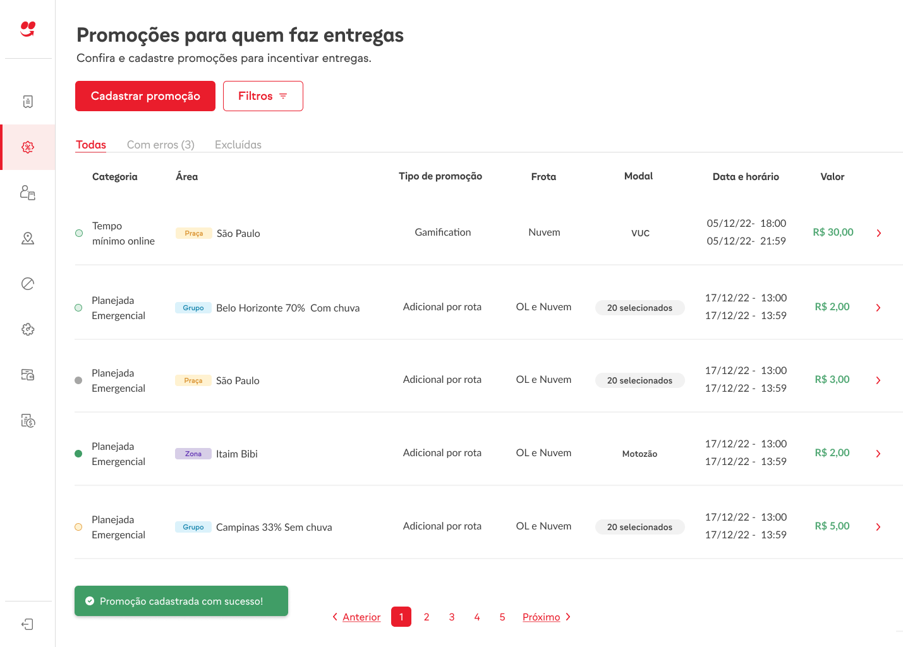

Supply Hours
Measured increase following implementation of the gamified bonus system.
I designed a gamified bonus system to increase driver Supply Hours, replacing a manual promotion model associated with payment delays, unclear rules, and high support demand.
Increase in Supply Hours
Following the implementation of the gamified bonus system.
Research the operational journey and the people managing promotions.
Make the workflow visible and explore the interaction structure.
Connect promotion management, configuration, and confirmation.
Connect the experience to driver supply and operational goals.
The previous manual promotion process led to payment delays of 3–5 business days and confusion among drivers about how promotions worked. In-depth, semi-structured interviews covered 21 people across planning, regional operations, field teams, Devlog, and data.

The workflow map and early sketches document the operational sequence and the interface exploration. Together, they show the structure behind the promotion-management experience.

The interface follows the operator’s task in sequence: review existing promotions, choose an incentive model, configure the rules, and confirm the setup.
The list brings promotion details into one view, including category, area, promotion type, fleet, date, and value.

The creation flow distinguishes a per-route bonus from a gamified promotion before asking for configuration details.

A dedicated step brings together the area, fleet, date range, time window, completed-route percentage, and bonus value.

The review step summarizes the promotion rules and selected fleets so the operator can check the setup before creating it.

After confirmation, the operator returns to the promotions list with a visible success message.

Supply Hours was the primary business outcome. Payment delays and support demand describe the earlier operational problems; no post-launch figures for those measures are documented in this case.
Measured increase following implementation of the gamified bonus system.
Business-day delay in the manual promotion model. Baseline context, rather than a post-launch result.
Promotion-related support demand was a key problem to address. A post-launch change is not quantified here.